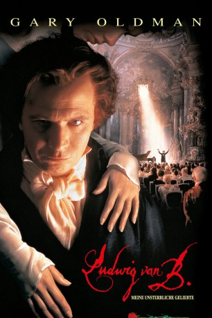
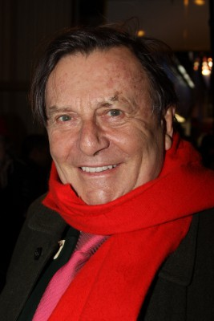

#9320 Ludwig van B.
Alternativ: Immortal Beloved
 
 IMDB-Wertung: 7.5 / 10
IMDB-Wertung: 7.5 / 10  Metascore: 0
Metascore: 0 
Ludwig van Beethoven - ein Leben zwischen Genialität und Wahnsinn. Wer war dieser Mann, dessen Musik Millionen von Menschen bezaubert? Und wer war seine unsterbliche Geliebte? Dies versucht sein Vertrauter und einziger Freund, Anton Felix Schindler, nach Beethovens Tod herauszufinden, denn der Meister hat seine Musik und sein gesamtes Vermögen einer “Unsterblichen Geliebten” vermacht! In Rückblenden entfaltet sich das Leben Beethovens, die unzähligen Liebschaften, die tragische Lebens- und Liebesgeschichte dieses einzigartigen Menschen, dessen grandioses Werk alle Zeitströmungen überdauert...
Jahr: 1994
Dauer: 120 Minuten
FSK: 12
Land: England Studio: Columbia TriStar Home EntertainmentTonspuren: DD5.1 - ,
Untertitel:
Auflösung: 1080p (1920x800) Größe: 10956 MB
Genre: Drama, Musik, Liebe, Biographie
Regisseur: Bernard Rose
Drehbuch: Bernard Rose
Soundtrack:
Darsteller:
 Gary Oldman als Ludwig van Beethoven
Gary Oldman als Ludwig van Beethoven Jeroen Krabbé als Anton Felix Schindler
Jeroen Krabbé als Anton Felix Schindler Isabella Rossellini als Anna Marie Erdödy
Isabella Rossellini als Anna Marie Erdödy- Johanna ter Steege als Johanna Reiss
- Marco Hofschneider als Karl van Beethoven
 Miriam Margolyes als Nanette Streicherová
Miriam Margolyes als Nanette Streicherová-  Barry Humphries als Clemens Metternich
 Valeria Golino als Giulietta Guicciardi
Valeria Golino als Giulietta Guicciardi Christopher Fulford als Kaspar Anton Carl van Beethoven
Christopher Fulford als Kaspar Anton Carl van Beethoven- Alexandra Pigg als Therese Obermayer
- Luigi Diberti als Franz Josef Guicciardi
 Michael Culkin als Jakob Hotscevar
Michael Culkin als Jakob Hotscevar Donal Gibson als Karl Holz
Donal Gibson als Karl Holz- Leo Faulkner als Young Ludwig van Beethoven
- Fintan McKeown als Johann van Beethoven, Sr
- Bernard Rose als Elector Max Friedrich
 Marek Vasut als Custody policeman
Marek Vasut als Custody policeman- Hugo Kaminský als Magistrate
- Barbora Srncová als Erdödy's servant
- Jan Censký als Captain (uncredited)
- Tomás Hanák als Jacob Raicz (uncredited)
- Ladislav Kazda als Landlord (uncredited)
- Pavel Vondruska als Aristocrat (uncredited)
 Gerard Horan als Nikolaus Johann van Beethoven
Gerard Horan als Nikolaus Johann van Beethoven- Matthew North als Young Karl van Beethoven
- Geno Lechner als Josephine von Brunsvik
- Claudia Solti als Theresa von Brunsvik
- Rory Edwards als Wenzel Robert von Gallenberg
- Hannes Flaschberger als Joseph Deym
- Everton Nelson als George Bridgetower
- Sandra Voe als Marie Fröhlich
- Jindra Petráková als Lilo Braun
- Stanislav Behal als Ignaz Schuppanzigh
- Arnostka Mohelská als Suzanna Guicciardi
- Stepan Hlatky als Zoltan
- Gordon Lovitt als Metternich's flunky
- Anna Kolinska als Fritzi Erdödy
- Ruby Rose als Mimi Erdödy
- Johan Kolinsky als August Erdödy
- Josef Kolínský als August Erdödy
- Jan Kuzelka als Country policeman
- Bruce Davey als Artillery Captain
- Stanislav Hybler als Sergeant (uncredited)
- Jirí Patocka als Pock-marked tramp (uncredited)
- Petr Pospíchal als Thin man (uncredited)
Datei: X:\1994\Ludwig van B. (1994, FSK12, 1920x800).mkv seit 27.07.2018
Festplatte: HD 1992-1995
 Es gibt insgesamt 67 Filme in der Gruppe '1994'
Es gibt insgesamt 67 Filme in der Gruppe '1994'